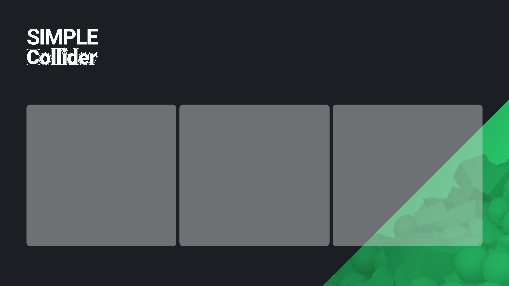
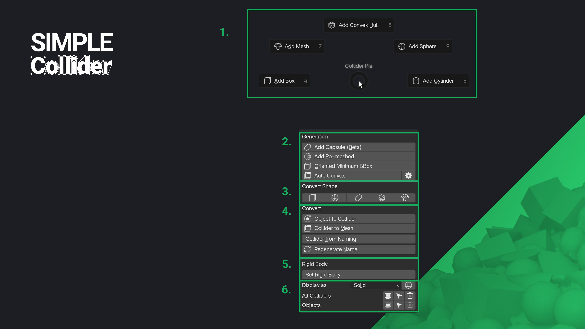

Simple Collider
Quick and easy collider creation for games!
What is Simple Collider?
Simple Collider makes creating physics colliders for games fast and straightforward. It supports common collider types like Box, Sphere, Capsule, Convex, and Mesh as well as complex operations like Auto Convex decomposition and Oriented Bound Box generation. Simple Collider is made to work with game engines like UE, Unity, and Godot.
The addon’s simple user experience and UI lets you adjust colliders directly in the 3D Viewport, making it easy to see and control what you're doing. You can create colliders in Object or Edit-mode, for entire selections or specific parts of a mesh. Plus, you can choose to work with pre- or post-modifier mesh data, giving you the flexibility and speed you need.
Video
See how Simple Collider simplifies collider creation:
Feature Overview
- Quick and simple creation of collider objects.
- Support for Sphere, Box, Capsule, Convex, Convex Cylinder, Re-Meshed and Mesh shapes.
- Support for Oriented Minimum Bounding Box generation, an automatically oriented box collider to have the lowest volume possible.
- Auto convex decomposition for complex shapes using the V-HACD library.
- Support for Object- and Edit-mode, including multi-object Edit-mode.
- Define creation space: Choose between generating colliders in Local or Global Space.
- Create colliders per individual object, around the entire selection, or based on loose parts.
- Custom colliders can be used in engines like UE4-5, Unity, Godot, and other engines with a flexible naming scheme.
- Support for Edit mode selection. Create collision only surrounding the selected geometry of each object, with multi-edit and modifier stack support.
- Support for creating world-aligned and object-aligned collisions for primitive collider types like Boxes, Cylinders, and Capsules.
- Create colliders based on pre or post-modifier stack mesh data.
- Adjust creation settings directly from the 3D Viewport, allowing for real-time user input during collider generation.
- Flexible naming options to support different engine and pipeline needs.
- Robust preset system: Select and switch between presets for different game engines, and easily exchange these presets.
- Rename colliders based on the current preset.
- Convert Mesh to Collider, Collider to Mesh, and generate colliders from a mesh name.
- Collider organization: Manage visibility, selection, and deletion using collider groups.
- Assign and organize materials for use as physics materials in engines.
Why Simple Collider?
Simple Collider removes the biggest obstacle to creating colliders in Blender—its lack of specialized tools. This addon makes the process much faster and easier, combining the speed and convenience of in-engine tools with the power and flexibility of Blender.
Here’s why Simple Collider stands out:
- More control: Create colliders in Blender with full control over shape, size and complexity - useful for all kind of assets.
- Faster compound colliders: Generate multiple colliders for one asset quickly using Object and Edit-mode selections.
- Engine compatibility: Not all engines have powerful collider tools—Simple Collider fills that gap.
- Convenience: Handle assets and colliders in one application, updating both as needed.

Testimonials
What other artists from the games industry say about Simple Collider:
 |
Richard Court - Senior Environment Artist | Studio Gobo
This addon is a must-have. It takes all the hassle and tedious work out of creating custom collision. So fast and easy to use, and it even takes care of naming and parenting with support for custom prefixes. |
 |
Jeremiah Estrellado / Lead Environment Artist / Founder of The Dinusty Empire
This is something that a lot of people overlook on how much time it can take up on a project. With its intuitive interface and support for complex shapes, it’s impressive how quickly you can get usable results. |
 |
Michael Kinsey - Tech Artist | Counterplay
I am a huge fan of addons that reduce the steps and amount of clicks it takes me to do menial tasks. This addon is one of those. Its simple and clean and will save a lot of time for anyone making collision meshes in Blender for use in game engines like Unreal Engine. I wish I had this addon a lot sooner! |
 |
Jérémy Cerisy - Environment Artist | Remedy Entertainment
I have been lucky enough to be able to try Collider Tools in the past months and I can tell you that it became directly one of my favorite and most used add-ons. Everything is just so simple and powerful. Now I can create collisions in a matter of seconds for any assets or modular kit and spend all this extra saved time on more creative and fulfilling tasks! |
 |
Arthur Chamerois - 3D Artist | Bulwark Studios Making collisions is often the most annoying part of the art pipeline. I think anyone working in real-time 3D deserves to get through this moment the proper way. That's what this addon allows. |
